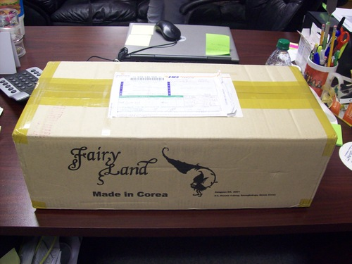
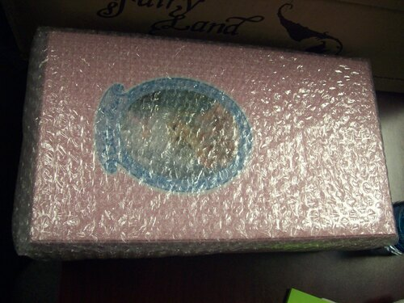

another case of event hype. she's cute but shes more of my mom's type than my own.
i believe i was very interested in getting a minifee at the time, but didnt fall in love with any of the heads. honestly i never did fall in love with a minifee head...



the fullset mohair wig is absolute crap. awful! the outfit does have real fur on it though! this is by far the best engineered doll i own. fairyland truly does have that advantage over everyone else.